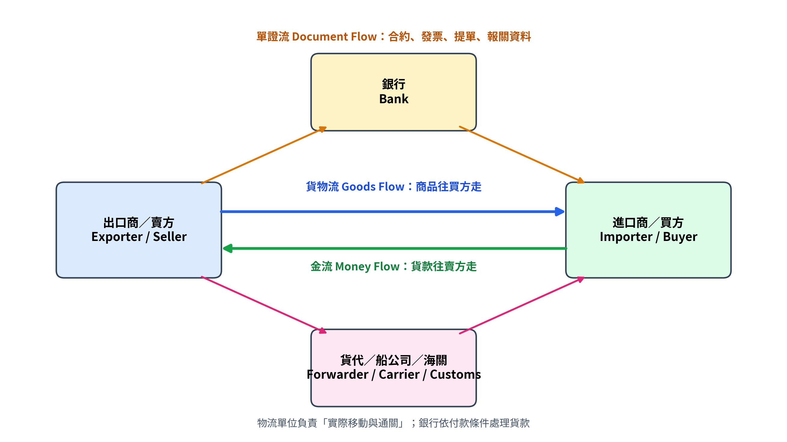
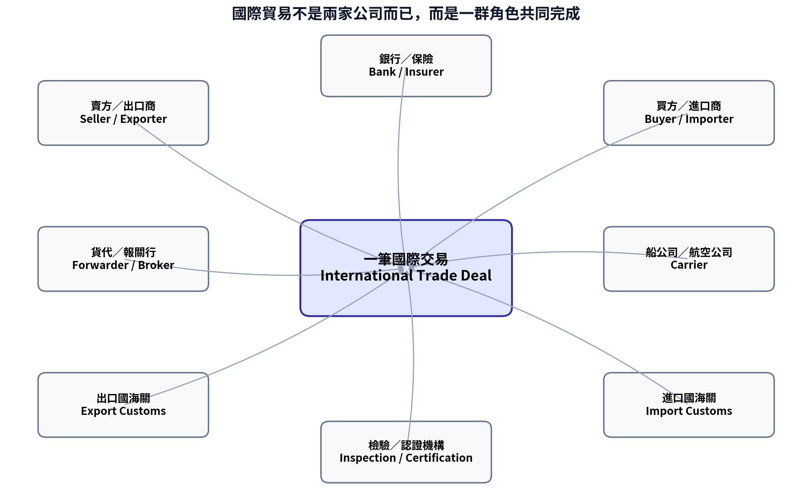
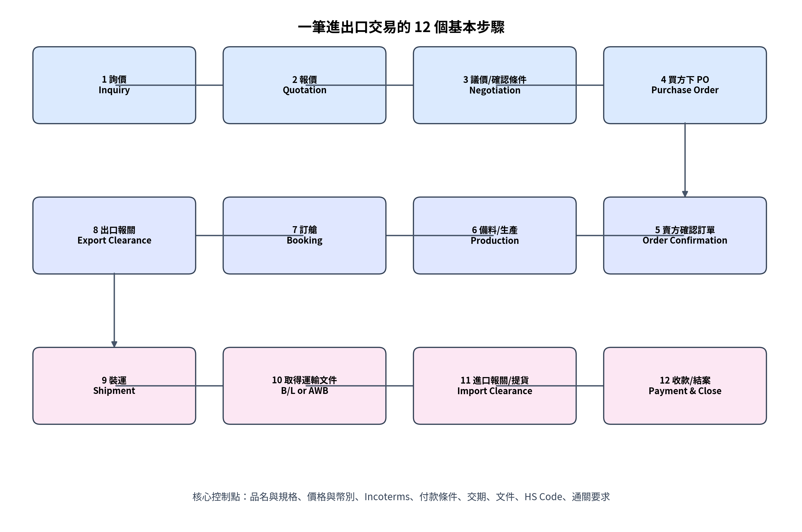
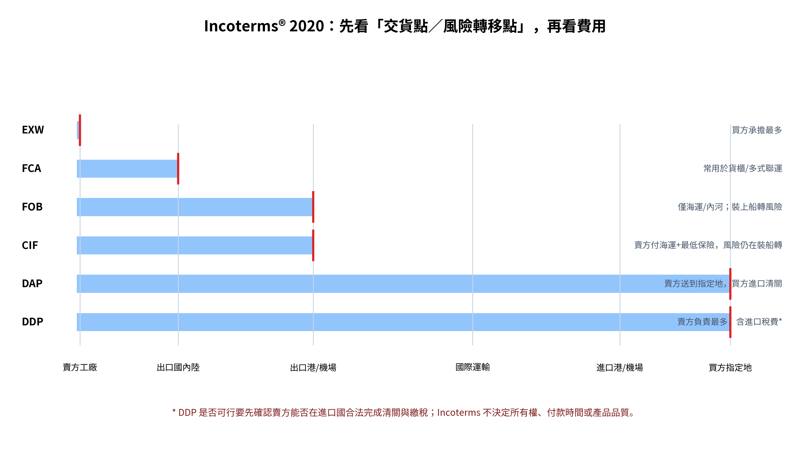

國際貿易進出口｜零基礎入門課程
從「買賣一件商品」開始，逐步學會報價、運輸、報關、文件與收付款
第一冊：建立完整觀念 + 成衣出口實務案例

適用對象：完全沒有進出口經驗、工廠管理者、業務、PMC、採購、船務、倉庫與財務新手
| 學習承諾｜讀完本冊後，你應能看懂一筆國際交易的全流程，知道每份主要文件在做什麼，並能用簡化成本表估算 EXW、FOB、CIF 與到岸成本。 |
|---|
不要先背縮寫。每遇到一個名詞，只問三個問題：① 貨物現在在哪裡？② 這一段費用誰付？③ 貨損風險現在由誰承擔？
| 學習層級 | 你會學到什麼 | 完成標準 |
|---|---|---|
| Level 1｜看懂 | 認識交易角色、三條流、12 步流程 | 能用自己的話講完整流程 |
| Level 2｜會判斷 | Incoterms、付款方式、主要文件、HS Code | 能判斷責任與風險 |
| Level 3｜會計算 | 報價、運費、保險、關稅、落地成本 | 能完成 Excel 練習表 |
| Level 4｜會操作 | 訂單確認、訂艙、報關、文件核對、收款 | 能用檢查表跟進一票貨 |
| Level 5｜會管理 | 異常、延誤、索賠、合規與內控 | 能找出流程漏洞並改善 |
第 1 章：國際貿易到底是什麼
第 2 章：一筆交易有哪些人
第 3 章：貨物流、單證流、金流
第 4 章：完整 12 步流程
第 5 章：最常見文件
第 6 章：Incoterms® 2020
第 7 章：報價與成本
第 8 章：付款方式
第 9 章：海運、空運、快遞與貨櫃
第 10 章：HS Code、原產地與關稅
第 11 章：柬埔寨成衣出口美國完整案例
第 12 章：常見錯誤、練習與 30 天計畫
最簡單的定義：一個國家或關稅區的賣方，把商品賣給另一個國家或關稅區的買方。因為貨要跨越邊境，所以除了「買賣」以外，還增加運輸、海關、文件、外幣、稅費與合規。
| 日常比喻｜你在網路上向外國商店買一雙鞋：商店要報價、收款、包裝、交給快遞；快遞把鞋送出國；海關確認商品與稅費；最後你收貨。企業貿易只是金額更大、文件更多、責任更嚴格。 |
|---|
| 角度 | 名稱 | 例子 |
|---|---|---|
| 柬埔寨工廠 | 出口 Export | 把 10,000 件圍裙賣到美國 |
| 美國客戶 | 進口 Import | 從柬埔寨買進 10,000 件圍裙 |
| 同一批貨 | 兩種說法 | 對賣方是出口；對買方是進口 |
取得本國沒有或成本較高的原料與產品。
把產品賣到更大的市場，增加訂單與產能利用率。
利用各國在原料、技術、人工、物流或市場上的不同優勢。
分散單一市場風險，但同時也會增加匯率、法規與供應鏈風險。
練習｜柬埔寨工廠將制服賣給澳洲公司，對柬埔寨工廠而言是什麼？
A. 進口
B. 出口
C. 轉口
| 答案與解釋：答案 B。判斷方式只看「貨物從自己的國家出去」或「進入自己的國家」。 |
|---|

| 角色 | 最主要工作 | 新手容易誤會 |
|---|---|---|
| 出口商 Exporter | 接單、備貨、生產、出口文件、交貨 | 不一定自己報關或自己訂船 |
| 進口商 Importer | 下單、付款、進口許可、清關、提貨 | 不一定是最終使用者 |
| 貨運代理 Freight Forwarder | 整合訂艙、拖車、文件、追蹤 | 貨代通常不是實際船舶所有人 |
| 報關行 Customs Broker | 依資料向海關申報 | 申報資料錯誤仍可能由進出口商承擔責任 |
| 承運人 Carrier | 實際承運：船公司、航空公司、快遞 | 提供 B/L、AWB 等運輸文件 |
| 銀行 Bank | 匯款、託收、信用狀、融資 | 銀行通常審文件，不替你檢查實際貨物品質 |
| 保險公司 Insurer | 承保運輸風險並處理索賠 | 沒有保險不代表承運人一定全額賠 |
| 海關 Customs | 監管進出口、稅則、禁限品、查驗 | 放行不等於所有法規責任消失 |
| 管理重點｜最常見的問題不是「沒有人做」，而是「每個人以為別人會做」。因此每票貨都要有明確的 Responsible Person、截止時間與文件清單。 |
|---|
商品從工廠或倉庫，經過拖車、港口／機場、國際運輸、進口清關，最後到買方。每一段都可能發生延誤、破損、短少或額外費用。
PO、合約、商業發票、裝箱單、提單、原產地證、檢驗證書與報關資料，會在賣方、買方、貨代、銀行與海關之間移動。文件上的品名、數量、重量、金額、地址與日期必須一致。
貨款可能在生產前、出貨前、取得文件後或到貨後支付。付款時間越晚，賣方承擔的信用風險通常越高；付款越早，買方承擔的履約風險通常越高。
| 一句話記住｜貨走得對、文件寫得對、錢收得到，三條流同時完成，交易才算真正結束。 |
|---|

| 步驟 | 要確認的關鍵問題 | 主要輸出 |
|---|---|---|
| 1-2 詢價與報價 | 規格、數量、幣別、Incoterms、交期 | Quotation |
| 3 議價 | 價格是否含運費、保險、稅？付款條件？ | Agreed Terms |
| 4-5 下單與確認 | PO 與報價是否一致？交期能否承諾？ | PO / Sales Confirmation |
| 6 生產/備貨 | 物料、品質、包裝、標籤、驗貨要求 | Finished Goods |
| 7 訂艙 | 船期、截關、櫃型、重量、目的港 | Booking Confirmation |
| 8 出口報關 | HS Code、發票、裝箱單、許可證 | Export Declaration |
| 9 裝運 | 實際件數、封條號、裝船/起飛日期 | Shipment Record |
| 10 運輸文件 | 提單草稿是否正確？正本或電放？ | B/L or AWB |
| 11 進口清關 | 進口商資料、稅費、查驗、提貨 | Import Release |
| 12 收款結案 | 款項、費用、索賠、文件歸檔 | Payment / Closing File |
| 時間控制｜國際運輸有多個截止點：Booking Cut-off、SI Cut-off、VGM Cut-off、Customs Cut-off、CY Cut-off。錯過其中一個，可能直接延到下一班船。 |
|---|
| 文件 | 中文用途 | 最重要欄位 |
|---|---|---|
| Inquiry / RFQ | 詢價：買方詢問價格與條件 | 品名、規格、數量、目的地 |
| Quotation | 報價單：賣方提出價格與條件 | 單價、幣別、Incoterms、有效期、付款、交期 |
| Purchase Order (PO) | 採購訂單：買方正式下單 | PO No.、款號、數量、價格、交期、地址 |
| Proforma Invoice (PI) | 形式發票：常用於預付款或申請文件 | 預估交易內容，不一定是最終報關發票 |
| Commercial Invoice (CI) | 商業發票：報關與收款的重要文件 | 賣買方、品名、數量、單價、總額、原產國、條件 |
| Packing List (PL) | 裝箱單：說明如何包裝 | 箱數、每箱數量、淨重、毛重、材積 |
| Bill of Lading (B/L) | 海運提單：承運收貨與運輸文件 | Shipper、Consignee、Notify、港口、櫃號、封條號 |
| Air Waybill (AWB) | 空運提單/運單 | 機場、航班、重量、收發貨人 |
| Certificate of Origin (C/O) | 原產地證：證明貨物原產地 | 原產國、出口商、進口商、品名、HS |
| Insurance Certificate | 保險證明 | 保額、承保範圍、航程、被保險人 |
| Inspection/Test Certificate | 驗貨或測試證明 | 標準、樣品、結果、日期 |
公司名稱與地址一致
品名與規格一致
數量與單位一致
重量、箱數與包裝一致
金額、幣別與付款條件一致
港口、日期、櫃號與封條號一致
練習｜海運提單上的 Consignee 通常表示誰？
| 答案與解釋：通常是收貨人或有權提貨的一方，但實際填法會受信用狀、To Order 提單與當地清關要求影響，不能只靠字面判斷。 |
|---|
Incoterms 是國際商會（ICC）制定的 11 個國際貿易術語，用來界定賣方與買方在運輸、保險、文件、出口／進口清關等工作、費用與風險上的分工。它們不等於付款條件，也不自動決定貨物所有權。

| 適用運輸 | 術語 | 新手理解 |
|---|---|---|
| 任何運輸方式 | EXW | 賣方在自己的場所備妥；買方責任最大 |
| 任何運輸方式 | FCA | 賣方交給買方指定承運人；貨櫃出口常比 FOB 合適 |
| 任何運輸方式 | CPT / CIP | 賣方支付主運費；CIP 另含較高等級保險；風險較早轉移 |
| 任何運輸方式 | DAP / DPU / DDP | 賣方把貨送到目的地附近；DPU 含卸貨；DDP 含進口稅費責任 |
| 僅海運/內河 | FAS / FOB | 在裝運港船邊或裝上船交貨 |
| 僅海運/內河 | CFR / CIF | 賣方支付到目的港海運；CIF 另含最低保險；風險仍在裝船時轉 |
只看誰付運費，沒有看風險在哪裡轉移。
報價只寫 FOB，沒有寫明確港口與版本；正確格式例如：FOB Sihanoukville Port, Incoterms® 2020。
貨櫃運輸仍慣性使用 FOB；實務上貨在貨櫃場交承運人時，FCA 往往更貼近實際交貨點。
把 CIF 誤以為賣方要負責貨物安全到目的港；其實風險通常在裝運港裝上船時已轉移。
使用 DDP 前沒有確認賣方能否在進口國辦理進口商登記、清關與繳稅。
| 判斷順序｜先找 Named Place（指定地點）→ 再找 Delivery Point（交貨/風險轉移點）→ 最後拆分費用與文件責任。 |
|---|
報價不是「工廠成本 + 利潤」就結束。國際交易還要看包裝、內陸運輸、報關、港雜、主運費、保險、進口稅費與目的地配送。不同 Incoterms，價格包含的範圍不同。
| 價格層級 | 簡化公式 | 代表意義 |
|---|---|---|
| EXW Price | 產品成本 + 包裝 + 利潤 | 工廠交貨價 |
| FCA/FOB Price | EXW + 出口內陸運輸 + 出口報關/港雜 | 交承運人或裝船前後的出口價 |
| CFR Price | FOB + 國際海運費 | 含運費到目的港 |
| CIF Price | CFR + 運輸保險 | 含運費與保險到目的港 |
| Landed Cost | CIF + 關稅 + 進口稅費 + 目的地費用 | 買方實際落地成本的簡化概念 |
| 項目 | 金額（USD） | 計算 |
|---|---|---|
| 10,000 件圍裙的產品與包裝 | 40,000 | 4.00 × 10,000 |
| 出口內陸/報關/港雜 | 2,000 | 固定費用 |
| 海運費 | 3,500 | 一櫃估算 |
| 保險 | 150 | 估算 |
| FOB 總價 | 42,000 | 40,000 + 2,000 |
| CIF 總價 | 45,650 | 42,000 + 3,500 + 150 |
| CIF 單價 | 4.565 | 45,650 ÷ 10,000 |
| 注意｜關稅通常不是單純用「貨值 × 稅率」就能涵蓋所有國家；完稅價格基礎、增值稅、反傾銷稅、港口費與報關費需依目的國規則確認。Excel 練習表是教學模擬，不替代正式報關計算。 |
|---|
| 付款方式 | 怎麼運作 | 賣方風險 | 買方風險 |
|---|---|---|---|
| Cash in Advance 預付款 | 先收款再生產/出貨 | 最低 | 最高 |
| Letter of Credit (L/C) 信用狀 | 銀行承諾在文件符合條件時付款 | 較低，但有文件不符風險 | 較低，但成本與流程較高 |
| Documentary Collection 託收 | 銀行轉交文件；D/P 付款交單、D/A 承兌交單 | 中至高 | 中 |
| Open Account (O/A) 賒帳 | 先出貨，30/60/90 天後付款 | 最高 | 最低 |
| Consignment 寄售 | 賣出後才付款 | 非常高 | 很低 |
銀行通常依信用狀條款審核「文件」，不是檢驗實際貨物。即使貨物完全正確，文件日期、拼字、金額、裝運期限或提單內容不符合，仍可能形成 Discrepancy（不符點）。
收到 L/C 後先審：金額、有效期、最遲裝運日、交單期限、允許分批/轉運、要求文件、品名與 Incoterms。
無法做到的條件要在生產與出貨前要求修改，不要等文件完成才發現。
O/A 客戶要做信用額度、逾期管理、信用保險或保理安排。
| 方式 | 適合 | 優點 | 限制 |
|---|---|---|---|
| 海運 Sea Freight | 大量、重貨、低單價商品 | 單位運費低、可用整櫃 | 時間較長、港雜與延誤環節多 |
| 空運 Air Freight | 高價、急單、輕小貨 | 快、班次較密 | 按實重或材積重計費，成本高 |
| 國際快遞 Courier | 樣品、小批、文件 | 門到門、操作簡單 | 大貨成本高，品項/國家限制 |
| 鐵路/陸運 Rail/Road | 鄰國或區域運輸 | 部分路線速度與成本平衡 | 跨境許可、轉運與基礎設施限制 |
FCL（Full Container Load）是整櫃，由單一貨主使用；LCL（Less than Container Load）是併櫃，與其他貨主共用貨櫃。LCL 不一定永遠便宜，還要比較集貨、拆櫃、倉租與處理費。
| 常見櫃型 | 大致用途 | 注意 |
|---|---|---|
| 20GP | 重貨或體積較小的貨 | 受道路與船公司限重影響 |
| 40GP | 一般大批貨 | 體積大但高度一般 |
| 40HQ | 成衣、輕泡貨常用 | 比 40GP 更高，裝載體積較大 |
| 材積重｜空運與快遞可能比較「實際重量」和「材積重量」，取較大者計費。包裝尺寸過大，即使貨很輕，運費仍可能很高。 |
|---|
HS（Harmonized System）由世界海關組織建立，前 6 碼在國際上高度標準化；各國可再延伸更多碼數，用來決定稅率、管制、統計與許可要求。品名相似不代表 HS Code 一定相同，材質、用途、結構與製程都可能影響分類。
原產地 Country of Origin 通常依商品在哪裡完全取得，或在哪裡完成實質轉型判斷。從新加坡轉運的柬埔寨成衣，不會因為經過新加坡就自動變成新加坡原產。優惠關稅還要符合特定貿易協定的原產地規則與證明。
| 海關想知道 | 對應資料 |
|---|---|
| 是什麼商品？ | 完整品名、材質、用途、HS Code |
| 多少？ | 數量、單位、淨重、毛重 |
| 值多少錢？ | 交易價格、運保費、幣別、估價資料 |
| 哪裡製造？ | 原產國與原產地證明 |
| 誰進出口？ | 公司登記、稅號、許可資格 |
| 是否受管制？ | 許可證、檢驗、標籤、安全或環保要求 |
| 責任觀念｜可以委託報關行操作，但不能把商品分類、價值與合規責任完全推給報關行。企業必須保存分類依據與申報資料。 |
|---|
| 欄位 | 內容 |
|---|---|
| 賣方 | VRT（示例）— 柬埔寨成衣工廠 |
| 買方 | US Uniform Buyer（示例） |
| 商品 | Poly/Cotton Apron，10,000 pcs |
| 報價條件 | FCA Sihanoukville Container Yard, Incoterms® 2020 |
| 付款 | 30% 訂金，70% 出貨文件副本後付款 |
| 運輸 | 40HQ 海運到 Los Angeles |
| 包裝 | 100 pcs/carton，共 100 cartons |
| 1. 客戶詢價｜提供款式、面料、顏色、尺寸、測試與包裝要求。 |
|---|
| 2. 工廠成本核算｜計算面輔料、人工、包裝、損耗、出口內陸與利潤。 |
|---|
| 3. 報價｜寫明 FCA 地點、幣別 USD、MOQ、有效期、付款與交期。 |
|---|
| 4. 接收 PO｜核對 PO 與報價：單價、數量、Ship Date、地址、標籤。 |
|---|
| 5. 訂單確認｜在承諾交期前確認物料與產能，不以「先接再說」代替評估。 |
|---|
| 6. 生產與驗貨｜依樣品、規格書與 AQL/客戶標準檢驗。 |
|---|
| 7. Booking｜向貨代提供預計箱數、毛重、材積、Ready Date、目的港。 |
|---|
| 8. 文件製作｜CI、PL、出口報關資料；核對品名、HS、數量、重量與價值。 |
|---|
| 9. 交櫃/交貨｜貨送到指定貨櫃場並交承運人；依 FCA 確認風險轉移證據。 |
|---|
| 10. 運輸文件｜核對 B/L Draft，再確認電放或正本安排。 |
|---|
| 11. 收尾款｜依約提供文件副本並追蹤 70% 貨款。 |
|---|
| 12. 結案｜保存 PO、報價、訂單確認、驗貨、報關、B/L、收款與費用。 |
|---|
PO 交期必須由生產、物料與船期共同確認。
所有文件共用同一份 Master Shipment Data，避免重複手打。
裝箱完成後，實際箱數、重量與尺寸回寫到 CI/PL。
B/L Draft 至少由船務與業務雙重核對。
付款條件與放單方式要連動：未符合收款條件時，不應誤放控制貨權的文件。
1. 報價沒有寫 Incoterms 指定地點與版本。
2. PO 與報價不一致卻沒有正式澄清。
3. 把 Ship Date、ETD、ETA、Delivery Date 當成同一件事。
4. 產品名稱在 PO、CI、PL、B/L 與報關資料中不一致。
5. 重量、箱數、材積由不同人各自維護，沒有單一來源。
6. 訂艙時低估重量或體積，造成加價或無法裝載。
7. HS Code 沿用舊資料，沒有保存分類依據。
8. 以為委託貨代後就不用管截止時間與文件。
9. 只關心貨是否出運，沒有追蹤貨款與逾期。
10. 異常沒有記錄原因、責任、費用與預防措施。
練習｜報價寫「CIF Los Angeles, Incoterms® 2020」，賣方付了海運與保險。貨在海上受損，是否一定由賣方承擔風險？
| 答案與解釋：不一定。CIF 的風險通常在裝運港貨物裝上船時轉移給買方；賣方仍負責支付到目的港的運費與最低保險。這正是「費用終點」和「風險轉移點」不同的典型。 |
|---|
練習｜工廠報 FOB 價 USD 5.00/pc，數量 20,000 pcs；海運 USD 4,000，保險 USD 300。簡化 CIF 單價是多少？
| 答案與解釋：FOB 總價 = 5 × 20,000 = 100,000；CIF 總價 = 100,000 + 4,000 + 300 = 104,300；CIF 單價 = 104,300 ÷ 20,000 = USD 5.215/pc。 |
|---|
練習｜CI 寫 100 cartons，PL 寫 98 cartons，B/L Draft 寫 100 packages。應該怎麼做？
| 答案與解釋：先停止確認 B/L，查明實際裝運箱數與 package 定義，再統一 CI、PL、報關與 B/L。不能只改其中一份文件。 |
|---|
| 天數 | 主題 | 實作 |
|---|---|---|
| Day 1-3 | 進口、出口、角色與三條流 | 用自己的工作案例畫流程 |
| Day 4-7 | 12 步流程與關鍵截止點 | 建立一票貨 Timeline |
| Day 8-11 | Quotation、PO、CI、PL | 核對一組模擬文件 |
| Day 12-16 | Incoterms 11 條 | 每天比較 2-3 個術語 |
| Day 17-20 | 報價與落地成本 | 完成 Excel 成本練習 |
| Day 21-23 | 付款方式與信用狀 | 做風險排序 |
| Day 24-26 | 運輸與貨櫃 | 比較海運/空運/快遞 |
| Day 27-28 | HS、原產地、關稅 | 找 3 個產品的分類依據 |
| Day 29 | 完整案例演練 | 從詢價做到結案 |
| Day 30 | 測驗與流程改善 | 列出公司 5 個風險點 |
| English | 中文 | English | 中文 |
|---|---|---|---|
| Exporter | 出口商 | Importer | 進口商 |
| Shipper | 託運人/發貨人 | Consignee | 收貨人 |
| Notify Party | 通知方 | Freight Forwarder | 貨運代理 |
| Customs Broker | 報關行 | Carrier | 承運人 |
| Quotation | 報價單 | Purchase Order | 採購訂單 |
| Commercial Invoice | 商業發票 | Packing List | 裝箱單 |
| Bill of Lading | 海運提單 | Air Waybill | 空運運單 |
| Certificate of Origin | 原產地證 | HS Code | 海關商品分類碼 |
| Customs Declaration | 報關申報 | Duty | 關稅 |
| Freight | 運費 | Insurance | 保險 |
| ETD | 預計離港/起飛日 | ETA | 預計到港/抵達日 |
| Cut-off | 截止時間 | Demurrage | 貨櫃在碼頭逾期費 |
| Detention | 貨櫃在碼頭外逾期使用費 | Letter of Credit | 信用狀 |
| Open Account | 賒帳 | Discrepancy | 文件不符點 |
| Landed Cost | 落地成本 | Incoterms | 國際貿易術語規則 |
本教材用於初學教育與流程理解。實際申報、稅率、許可、產品標準與法律責任，必須依出口國、進口國、商品與交易條件，向海關、專業報關行、銀行、保險公司或法律/貿易顧問確認。
← AC Admin